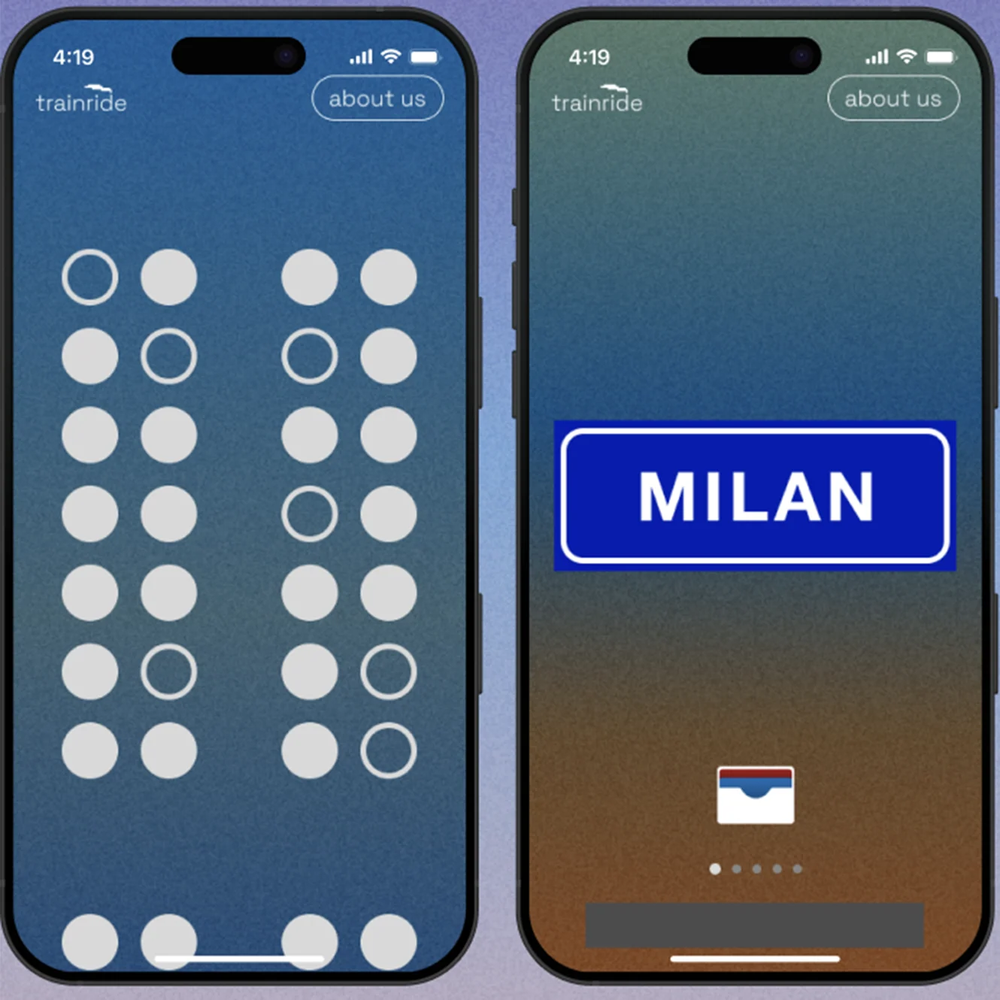

Prototipo interattivo di un viaggio in treno notturno.
Mi occupo di interfacce, grafica e identità visiva. Il mio percorso parte dall’informatica e continua nell’Interaction Design.
I miei progettiInteraction design e comunicazione visiva
Vengo da Cupramontana. Ho studiato informatica al Marconi Pieralisi di Jesi e ho scelto di proseguire con Interaction Design al Politecnico di Milano. La grafica è entrata nel mio percorso attraverso i video, i progetti personali e la musica. Suono la batteria da quando avevo sei anni.
La mia storia